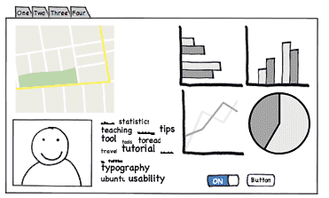

Reading 6: User Centered Design

The candidate for today’s User Interface Hall of Fame is tabbed browsing, a feature found in almost all web browsers. With tabbed browsing, multiple browser windows are grouped into a single top-level window and accessed by a row of tabs.
One advantage of tabbed browsing is that each browser window can then be dedicated to a particular task, e.g., apartment hunting, airfare searching, programming documentation, web surfing. It’s an easy and natural way for you to create task-specific groupings of your browser windows.
Another neat feature of tabbed browsing is that you can bookmark a set of tabs so you can recover them again later—a nice shortcut for task-oriented users.
What are the downsides of tabbed browsing? For one thing, you can’t compare the contents of one tab with another. External windows let you do this by resizing and repositioning the windows.
Another problem is that tabs don’t really scale up either—you can’t have more than 5-10 without shrinking their labels so much that they’re unreadable. Some designers have tried using multiple rows of tabs, but if you stick slavishly to the tabbing metaphor, this turns out to be a horrible idea. Here’s the Microsoft Word 6 option dialog. Clicking on a tab in a back row (like Spelling) moves the whole row forward in order to maintain the tabbing metaphor. What’s the problem with this?
Here’s how Eclipse tries to address the tab scaling problem: it shows a few tabs, and the rest are found in a pulldown menu on the right end of the tab bar.
The menu tries to distinguish between the visible tabs and the hidden tabs using boldface. Quick, before studying the names of the tabs carefully – which do you think is which? Was that a good decision?
Picking an item from the menu will make it appear as a tab - replacing one of the tabs that’s currently showing. Which tab will get replaced?
The standard approach to designing user interfaces is user-centered design, which has three components. We’ll talk about the first two today; we’ll defer evaluation (testing with users) until a later reading.
Iterative Design
Lather, rinse, repeat!


Let’s contrast the iterative design process against another way. The waterfall model was one of the earliest carefully-articulated design processes for software development. It models the design process as a sequence of stages. Each stage results in a concrete product - a requirements document, a design, a set of coded modules - that feeds into the next stage. Each stage also includes its own validation: the design is validated against the requirements, the code is validated (unit-tested) against the design, etc.
The biggest improvement of the waterfall model over previous (chaotic) approaches to software development is the discipline it puts on developers to think first, and code second. Requirements and designs generally precede the first line of code.
If you’ve taken a software engineering course, you’ve experienced this process yourself. The course staff probably handed you a set of requirements for the software you had to build — e.g., the specification of a chat client or a pinball game. (In the real world, identifying these requirements would be part of your job as software developers.) You were then expected to meet certain milestones for each stage of your project, and each milestone had a concrete product: (1) a design document; (2) code modules that implemented certain functionality; (3) an integrated system. Validation is not always sufficient; sometimes problems are missed until the next stage. Trying to code the design may reveal flaws in the design - e.g., that it can’t be implemented in a way that meets the performance requirements. Trying to integrate may reveal bugs in the code that weren’t exposed by unit tests. So the waterfall model implicitly needs feedback between stages.
The danger arises when a mistake in an early stage - such as a missing requirement - isn’t discovered until a very late stage - like acceptance testing. Mistakes like this can force costly rework of the intervening stages. (That box labeled “Code” may look small, but you know from experience that it isn’t!)
Although the waterfall model is useful for some kinds of software development, it’s very poorly suited to user interface development.
First, UI development is inherently risky. UI design is hard for all the reasons we discussed in the first class. (You are not the user; the user is always right, except when the user isn’t; users aren’t designers either.) We don’t (yet) have an easy way to predict whether a UI design will succeed.
Second, in the usual way that the waterfall model is applied, users appear in the process in only two places: requirements analysis and acceptance testing. Hopefully we asked the users what they needed at the beginning (requirements analysis), but then we code happily away and don’t check back with the users until we’re ready to present them with a finished system. So if we screwed up the design, the waterfall process won’t tell us until the end.
Third, when UI problems arise, they often require dramatic fixes: new requirements or new design. We saw in Lecture 1 that slapping on patches doesn’t fix serious usability problems.
Iterative design offers a way to manage the inherent risk in user interface design. In iterative design, the software is refined by repeated trips around a design cycle: first imagining it (design), then realizing it physically (implementation), then testing it (evaluation).
In other words, we have to admit to ourselves that we aren’t going to get it right on the first try, and plan for it. Using the results of evaluation, we redesign the interface, build new prototypes, and do more evaluation. Eventually, hopefully, the process produces a sufficiently usable interface.
Sometimes you just iterate until you’re satisfied or run out of time and resources, but a more principled approach is to set usability goals for your system. For example, an e-commerce web site might set a goal that users should be able to complete a purchase in less than 30 seconds.
Many of the techniques we’ll learn in this course are optimizations for the iterative design process: design guidelines reduce the number of iterations by helping us make better designs; cheap prototypes and discount evaluation techniques reduce the cost of each iteration. But even more important than these techniques is the basic realization that in general, you won’t get it right the first time. If you learn nothing else about user interfaces from this class, I hope you learn this.
You might object to this, though. At a high level, iterative design just looks like the worst-case waterfall model, where we made it all the way from design to acceptance testing before discovering a design flaw that forced us to repeat the process. Is iterative design just saying that we’re going to have to repeat the waterfall over and over and over? What’s the trick here?

The spiral model offers a way out of the dilemma. We build room for several iterations into our design process, and we do it by making the early iterations as cheap as possible.
The radial dimension of the spiral model corresponds to the cost of the iteration step - or, equivalently, its fidelity or accuracy. For example, an early implementation might be a paper sketch or mockup. It’s low fidelity, only a pale shadow of what it would look and behave like as interactive software. But it’s incredibly cheap to make, and we can evaluate it by showing it to users and asking them questions about it.
Sketches


Paper Prototypes


Computer Mockups
Here are some examples of early-stage prototyping for graphical user interfaces. We’ll talk about these techniques and more in a future Prototyping reading.

Remember this Hall of Shame candidate from the first class? This dialog’s design problems would have been easy to catch if it were only tested as a simple paper sketch, in an early iteration of a spiral design. At that point, changing the design would have cost only another sketch, instead of a day of coding.
Why is the spiral model a good idea? Risk is greatest in the early iterations, when we know the least. So we put our least commitment into the early implementations. Early prototypes are made to be thrown away. If we find ourselves with several design alternatives, we can build multiple prototypes (parallel design) and evaluate them, without much expense. The end of this reading will make more arguments for the value of parallel design.
After we have evaluated and redesigned several times, we have (hopefully) learned enough to avoid making a major UI design error. Then we actually implement the UI - which is to say, we build a prototype that we intend to keep. Then we evaluate it again, and refine it further.
The more iterations we can make, the more refinements in the design are possible. We’re hill-climbing here, not exploring the design space randomly. We keep the parts of the design that work, and redesign the parts that don’t. So we should get a better design if we can do more iterations.
Cheap prototypes
Scenarios
User guides
Simulation (Wizard of Oz)
Prototyping tools (IBM Voice Toolkit)
Iterative design
200 (!) iterations for user guide
Evaluation at every step
You are not the user
Non-English speakers had trouble with alphabetic entry on telephone keypad

The Olympic Message System is a classic demonstration of the effectiveness of user-centered design (Gould et al, “The 1984 Olympic Message System”, CACM, v30 n9, Sept 1987). The OMS designers used a variety of cheap prototypes: scenarios (stories envisioning a user interacting with the system), manuals, and simulation (in which the experimenter read the system’s prompts aloud, and the user typed responses into a terminal). All of these prototypes could be (and were) shown to users to solicit reactions and feedback.
Iteration was pursued aggressively. The user guide went through 200 iterations!
A video about OMS can be found on YouTube. Check it out—it includes a mime demonstrating the system.
▶︎ Play videoThe OMS also has some interesting cases reinforcing the point that the designers cannot rely entirely on themselves for evaluating usability. Most prompts requested numeric input (“press 1, 2, or 3”), but some prompts needed alphabetic entry (“enter your three-letter country code”). Non-English speakers - particularly from countries with non-Latin languages - found this confusing, because, as one athlete reported in an early field test, “you have to read the keys differently.” The designers didn’t remove the alphabetic prompts, but they did change the user guide’s examples to use only uppercase letters, just like the telephone keys.
reading exercises
Which of the following are aspects of the spiral model but not the waterfall model? (choose all good answers)
(missing explanation)
Needfinding
The best sources of information for needfinding are user interviews and direct observation. Usually, you’ll have to observe how users currently solve the problem. For the OMS example, we would want to observe athletes interacting with each other, and with family and friends, while they’re training for or competing in events. We would also want to interview the athletes, in order to understand better their goals.
A good collection of information-collection techniques is summarized by Need Finding Tools.
Contextual inquiry is a technique that combines interviewing and observation, in the user’s actual work environment, discussing actual work products. Contextual inquiry fosters strong collaboration between the designers and the users. (Wixon, Holtzblatt & Knox, “Contextual design: an emergent view of system design”, CHI ‘90)
Participatory design includes users directly on the design team - participating in needfinding, proposing design ideas, helping with evaluation. This is particularly vital when the target users have much deeper domain knowledge than the design team. It would be unwise to build an interface for stock trading without an expert in stock trading on the team, for example.
The reason for user analysis is straightforward: since you’re not the user, you need to find out who the user actually is.
User analysis seems so obvious that it’s often skipped. But failing to do it explicitly makes it easier to fall into the trap of assuming every user is like you. It’s better to do some thinking and collect some information first. Knowing about the user means not just their individual characteristics, but also their situation. In what environment will they use your software? What else might be distracting their attention? What is the social context? A movie theater, a quiet library, inside a car, on the deck of an aircraft carrier; environment can place widely varying constraints on your user interface.
Other aspects of the user’s situation include their relationship to other users in their organization, and typical communication patterns. Can users ask each other for help, or are they isolated? How do students relate differently to lab assistants, teaching assistants, and professors?
Many problems in needfinding are caused by jumping too quickly into a system design. This sometimes results in wishful thinking, rather than looking at reality. Saying “OMS users should all have touchtone phones” is stating a requirement on the system, not a characteristic of the existing users. One reason we do needfinding is to see whether these requirements can actually be satisfied, or whether we’d have to add something to the system to make sure it’s satisfied. For example, maybe we’d have to offer touchtone phones to every athlete’s friends and family…
Many, if not most, applications have to worry about multiple classes of users.
Some user groups are defined by the roles that the user plays in the system: student, teacher, reader, editor. Other groups are defined by characteristics: age (teenagers, middle-aged, elderly); motivation (early adopters, frequent users, casual users). You have to decide which user groups are important for your problem, and do a user analysis for every class.
The Olympic Message System case study we saw in an earlier reading identified several important user classes by role.
The best sources of information are user interviews and direct observation. Usually, you’ll have to observe how users currently perform the task. For the OMS example, we would want to observe athletes interacting with each other, and with family and friends, while they’re training for or competing in events. We would also want to interview the athletes, in order to understand better their goals in the task.
The premature-system-design mindset can affect this part too. If you’re writing down tasks from the system’s point of view, like “Notify user about appointment”, then you’re writing requirements (what the system should do), not user goals. Sometimes this is merely semantics, and you can just write it the other way; but it may also mean you’re focusing too much on what the system can do, rather than what the user wants. Tradeoffs between user goals and implementation feasibility are inevitable, but you don’t want them to dominate your thinking at this early stage of the game.
Needfinding derived from observation may give too much weight to the way things are currently done. The steps of a current system are concrete tasks, like “save file to disk.” But if we instead generalize that to a user goal, like “make sure my work is kept”, then we have an essential task, which admits much richer design possibilities when it’s time to translate this task into a user interface.
A danger of concrete analysis is that it might preserve tasks that are inefficient or could be done a completely different way in software. Suppose we observed users interacting with paper manuals. We’d see a lot of page flipping: “Find page N” might be an important subtask. We might naively conclude from this that an online manual should provide really good mechanisms for paging & scrolling, and that we should pour development effort into making those mechanisms as fast as possible. But page flipping is an artifact of physical books! It might pay off much more to have fast and effective searching and hyperlinking in an online manual. That’s why it’s important to focus on why users do what they do (the essential tasks), not just what they do (the concrete tasks).
Conversely, an incomplete analysis may fail to capture important aspects of the existing procedure. In one case, a dentist’s office converted from manual billing to an automated system. But the office assistants didn’t like the new system, because they were accustomed to keeping important notes on the paper forms, like “this patient’s insurance takes longer than normal.” The automated system provided no way to capture those kinds of annotations. That’s why interviewing and observing real users is still important, even though you’re observing a concrete task process.

Watch this video about the design firm IDEO’s process.
▶︎ Play videoIn the video, where does IDEO collect information from users and observation? What problems and goals do they discover from their observation?
reading exercises
What’s the fastest speed that a wind-blown shopping cart has been clocked crossing a parking lot? (choose one best answer)
(missing explanation)
Idea Generation
After you collect information about the users and their goals, you’ll have to identify a key problem that you’re going to solve by building new software. Sometimes the problem will jump out at you; if so great. If not, you’ll need to generate some ideas for problems to solve. That means reading and thinking about all the information you’ve collected, and then doing some idea generation. These slides talk about the idea generation process. You’ll find this useful not just at this stage, but also for the next step in your project, when you’ll have to generate ideas for solutions to the problem you’ve identified.
Note that group brainstorming by itself is not the best approach. It’s been shown that you’ll generate more ideas if you and your teammates first think about it privately, write down your individual ideas, then come together as a group to synthesize and build on each other’s ideas. At top design firms like IDEO, if you don’t bring in at least 5 ideas to every ideation meeting, then you won’t last long as a designer.
IDEO has developed a list of rules for good brainstorming as a group. Read more about them here.


Don’t fixate on one approach too early. Instead, keeping multiple alternatives on the table helps with all parts of the user-centered design process - design, implementation, and evaluation. Human beings need multiple alternatives to be creative and give good feedback. Here’s some evidence.
- For individual designers: designers produce designs that are more creative and divergent when they keep multiple designs around throughout the iterative process. They also feel more confident about their designs, and the resulting final design is objectively better. (Dow et al, “Parallel Prototyping Leads to Better Design Results, More Divergence, and Increased Self-Efficacy”, TOCHI, 2010).
- For groups: when you’re sharing ideas with a group, sharing multiple ideas is better than sharing your single favorite. The group is more likely to integrate parts of multiple ideas together, the group explore more of the design space, and others in the group provide more productive critiques. (Dow et al., “Prototyping Dynamics: Sharing Multiple Designs Improves Exploration, Group Rapport, and Results,” CHI 2011).
- For users: users give more constructive critiques when they’re asked to use multiple alternative prototypes. (Tohidi et al, “Getting the Right Design and the Design Right: Testing Many Is Better Than One.” CHI 2006.)
Two reasons why multiple alternatives help. First, humans are better at comparing things than they are at judging the absolute value of one thing in isolation. Second, presenting only one idea puts a lot of emotional weight on it, so the idea’s presenter feels obliged to defend it, and others feel reluctant to criticize it.
reading exercises
Which of the following are good approaches for idea generation? (choose all good answers)